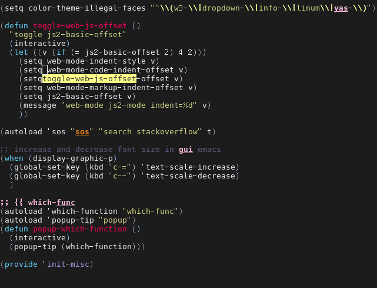

popup function where your cursor is in
Which Func Mode will display the current function name in the mode line.
But I can't use it.
It's because I reduce my mode-line into minimum to make it work with my tiny netbook.
Showing the function in header is also not possible because it conflicts with my color theme.
So I choose to display the function name in a popup.
Insert below code into ~/.emacs,
(autoload 'which-function "which-func")
(autoload 'popup-tip "popup")
(defun copy-yank-str (msg)
(kill-new msg)
(with-temp-buffer
(insert msg)
(shell-command-on-region (point-min) (point-max)
(cond
((eq system-type 'cygwin) "putclip")
((eq system-type 'darwin) "pbcopy")
(t "xsel -ib")
))))
(defun popup-which-function ()
(interactive)
(let ((msg (which-function)))
(popup-tip msg)
(copy-yank-str msg)
))
The extra bonus is "popup-which-function" will also insert the function name into clipboard and kill ring.
The above code need package "popup.el" to be installed.
Screen shot:

#+image/pop-which-func-nq8.png